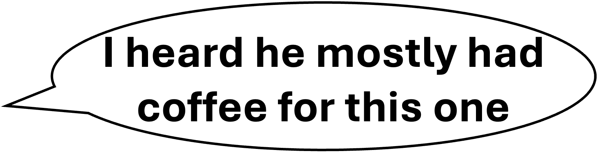
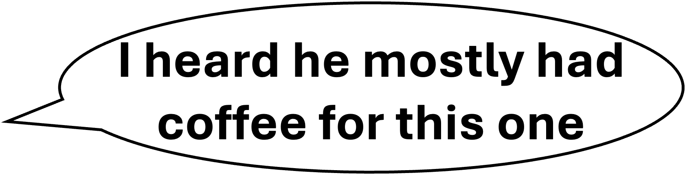

SoftKnit Lab
Knitting Molecular Function Across Scales
Our research at the SoftKnit Lab at ISTA bridges organic chemistry and materials science to engineer responsive systems that exhibit purposeful behavior taking molecular functions to macroscopic scales. Our goal is to “knit” chemistry, molecular assembly, materials geometry, and stimuli-responses together into adaptive systems.
From Structure to Mechanistic Insight

Through the tools of physical organic and synthetic chemistry, we uncover the mechanistic underpinnings of stimuli-responsive molecular systems. Visible light-responsive molecules are especially compelling for their non-invasive activation and their suitability for biologically and technologically relevant environments.
From Molecules to Functional Matter
We translate molecular responsiveness into material performance by guiding how molecules organize, interact, and transform. Through this bottom-up design, emergent properties such as phase change and mechanical adaptation become accessible and tunable.


From Functional Matter to Emergence
By orchestrating structure and responsiveness across scales, we enable materials to exhibit higher-order functions—such as memory, adaptation, and selective response—rooted in their physical architecture.
From New Voices to New Directions

From molecules to materials to function—if that arc excites you, we want to hear from you. Join us in exploring what’s possible.